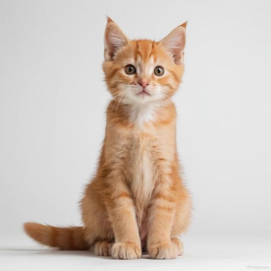
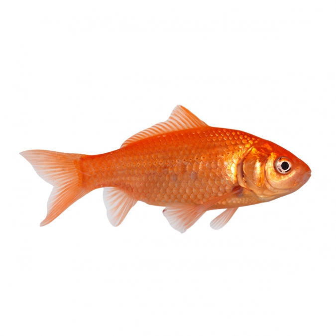
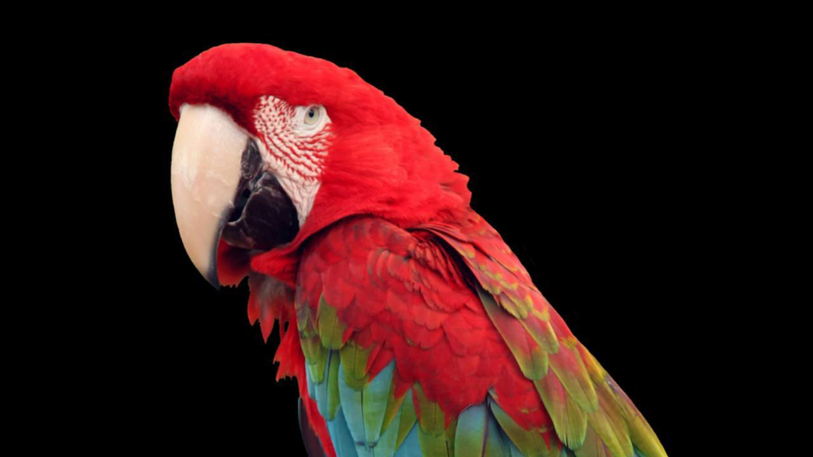

| Tipo de Mascota | Ejemplares estimados | % de presencia global en hogares | Dato curioso |
|---|---|---|---|
| Perros | 470 millones | ~32,9% | Su sentido del olfato es tan potente que pueden detectar algunas enfermedades humanas (como picos de glucemia o ciertos cánceres) antes que los médicos. |
| Gatos | 373 millones | ~26,1% | Rusia es el país más "cat-friendly" del mundo; el 59% de sus hogares convive con al menos un felino. Además, los gatos pasan un tercio de su vida despiertos acicalándose. |
| Peces | 500 millones | ~35,0% | Es el grupo más numeroso del planeta. Un solo aficionado a la acuariofilia suele tener entre 10 y 30 ejemplares en un solo tanque, lo que multiplica su población total. |
| Aves | 48 millones | ~3,3% | Los periquitos y canarios son los reyes de esta categoría. Algunas aves domésticas, como los loros, tienen la capacidad cognitiva de un niño de 5 años. |
Depende bastante del pais y de la cultura, hay paises en los cuales podemos encontrar animales fuera de lo habitual como mascotas, aqui van unos ejemplos
Empezando desde arriba los capibaras se estan volviendo frecuentes en Japón, en cambio para el resto del mundo seria impensable tener un roedor de 50 Kg dando vueltas por casa.
De igual forma, el petauro azul es un animal exótico que se ha convertido en una popular mascota en algunos países de América del Sur.
El zorro ártico es otro animal exótico que ha ganado popularidad como mascota en ciertos países, especialmente en rusia.
El erizo de tierra es un animal exótico que ha ganado popularidad como mascota en algunos países como lo son Estados Unidos y Japón.
El grillo es un animal exótico que ha ganado popularidad como mascota en china mayoritariamente debido a una tradicion de una dinastia antigua, y si, la mayoria los tiene para escuchar sus cantos.